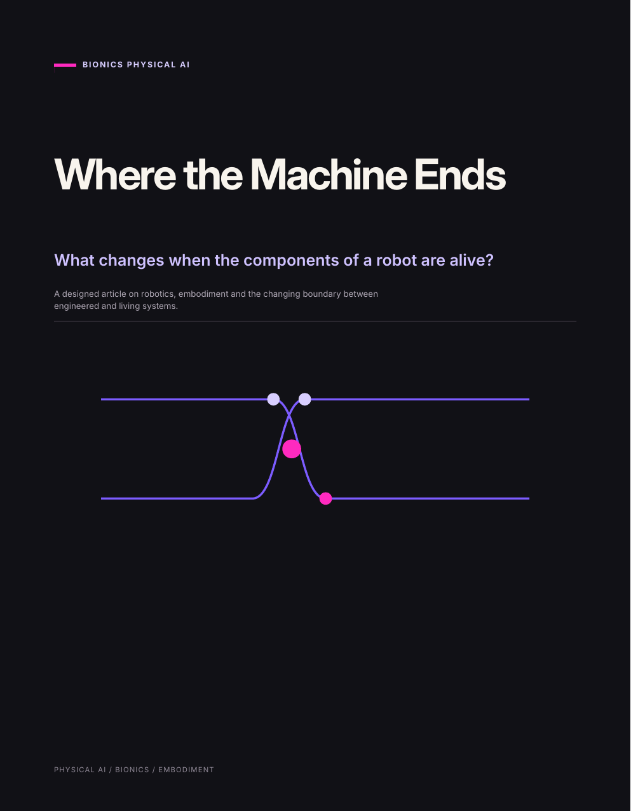

BIONICS PHYSICAL AI · PART 03 OF 05
Where the Machine Ends
What changes when the components of a robot are alive?

Designed article · PDF · 5 pages
Read part 03.
Living muscle, neurons, cyborg organisms, Xenobots and Anthrobots pull robotics into a different engineering regime. Components need metabolic support, develop over time and bring biological dynamics into systems that engineers usually try to specify completely.
The question
What changes when a robotic component develops, repairs, ages and eventually dies?
The article follows the shift from fabrication toward cultivation. As living material gains more of its own developmental competence, engineering moves toward setting conditions, constraints and feedback rather than specifying every detail of the final form.